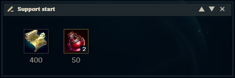
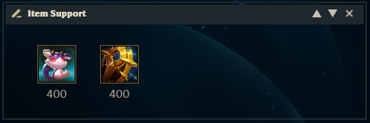
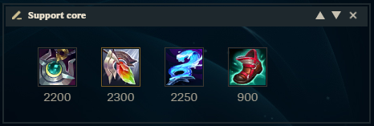
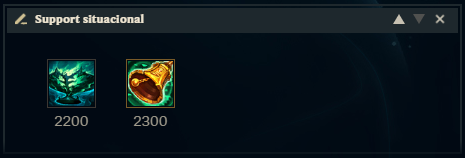
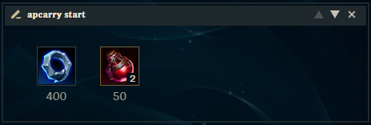
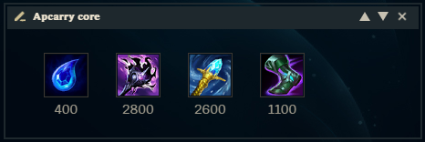

A Build de um campeão é o conjunto de itens que você escolhe ao longo da partida, com o objetivo de aumentar
seu poder, resistência, utilidade ou até cura. Assim como as runas, os itens ajudam a moldar o estilo de
jogo de cada campeão conforme a situação da partida.
Cada campeão tem sinergias melhores com certos tipos de item, dependendo de seus atributos e habilidades.
Por exemplo, campeões baseados em dano mágico (AP), como a Seraphine, vão se beneficiar mais de itens de
poder de habilidade, enquanto suportes encantadores podem priorizar itens de cura, escudo e utilidade para o
time.
Categorias
Míticos: Itens principais únicos por partida, que definem o estilo da sua build.
Lendários: Itens complementares, geralmente focados em dano, defesa, cura ou utilidade.
Itens de suporte: Custam menos e oferecem ouro por assistência ou poke, além de visão.
Botas: Ajudam com mobilidade e, às vezes, reduzem recargas.
Como montar?
Saber montar a build eficaz depende de:
Seu estilo de jogo (agressivo, defensivo, utilitário...)
A composição do seu time e do inimigo (muito tank? muito dano explosivo?)
A fase da partida (início, meio, fim)
Com a build certa, a Seraphine pode ser uma AP Carry poderosa, capaz de causar muito dano em área, ou uma
suporte encantadora, focada em manter o time vivo e controlar o campo de batalha.
Build Support
Quando falamos em build de suporte para Seraphine, estamos nos referindo à seleção de itens que
potencializam tudo aquilo que ela faz de melhor: curar, escudar, controlar o campo de batalha e manter
os
aliados vivos durante as lutas. Por ser uma campeã com habilidades em área e forte utilidade, a
Seraphine se
encaixa perfeitamente na função de suporte encantadora, funcionando quase como uma segunda fonte de
sustain
e controle além do atirador.
Lembrando que builds são situacionais e em alguns patchs elas sofrem mudanças, mantenha-se atualizado e
procure entender melhor sobre cada item.
Start

Atlas Mundial: Item de suporte já adicionado automaticamente no começo.
Poção de Vida: Restaura 120 de Vida ao longo de 15s. Precisa consumir.
Evolução Item de Suporte

Criassonhos: Conceder cura ou Escudo a um aliado sopra Bolhas do Sonho em direção a ele
por
3s. O próximo Ataque dele causará Dano Mágico adicional ao contato e o próximo dano sofrido por ele
será
reduzido.
Oposição Celestial: Reduz o dano sofrido poor Campe por 2s após sofrer dano de um
Campeão.
Quando o efeito termina, causa 50% de Lentidão a inimigos próximos por 1.5s.
Itens Core

Pedra Lunar: Curar um aliado ou conceder Escudo a ele ativa um efeito em cadeia em outro
aliado (menos em si), curando-o em 30% ou concedendo a ele um Escudo de 35% do valor original.
Redenção: Depois de 2,5s restaura 200-400 da Vida das unidades aliadas e causa 10% da
Vida
máxima como Dano Verdadeiro a Campeões inimigos.
Cajado Aquafluxo: Curar ou conceder Escudo a um aliado concede a vocês dois 45 de Poder
de
Habilidade por 6s.
Botas da Lucidez: Recebe 10 de Aceleração de Feitiços de Invocador.
Itens Situacionais

Ecos de Helia (1° item, se estiver com janela de Poke): Causar dano a um Campeão concede
um
Fragmento de Espírito, até 2. Conceder curas ou Escudos a um aliado consome todos os Fragmentos de
Espírito para restaurar Vida e causar Dano Mágico por Fragmento ao Campeão inimigo mais próximo.
Bênção de Mikael (1° item, se tiver muito CC do lado inimigo): Remove todos os efeitos de
Controle de Grupo de um Campeão aliado (exceto Arremesso ao Ar e Supressão) e restaura 100-250 de
Vida.
Build Apcarry
Seraphine assume um papel mais agressivo e central no dano da equipe. Sua build foca em itens que
aumentam
seu poder de habilidade, permitindo que suas skills causem mais dano em área, além de manter o controle
de
grupo constante com lentidões, enraizamentos e stuns.
Diferente da função de suporte, aqui o objetivo não é proteger, mas pressionar. Com as habilidades
certas,
ela consegue limpar ondas de minions rapidamente, zonear o inimigo e brilhar em lutas em grupo. Os itens
escolhidos vão potencializar o dano explosivo e o poke à distância, ao mesmo tempo em que garantem mana
e
redução de recarga para que ela fique ativa o tempo todo.
Com a build certa, Seraphine AP Carry é capaz de desequilibrar teamfights inteiras com uma combinação de
dano
em área, utilidade e controle, sendo uma escolha versátil e poderosa mesmo fora da rota tradicional de
suporte.
Lembrando que builds são situacionais e em alguns patchs elas sofrem mudanças, mantenha-se atualizado e
procure entender melhor sobre cada item.
Start

Anel de Doran: Restaura 1.25 de Mana a cada segundo. Caso você não possa receber Mana,
restaura 0.55 de Vida.
Poção de Vida: Restaura 120 de Vida ao longo de 15s. Precisa consumir.
Itens Core

Lágrima da Deusa (pode ser usada no lugar do anel de Doran): Acertar habilidades concede
3 de Mana máximo (dobrado contra Campeões) até 360. Pode ser evoluído para Cajado do Arcanjo.
Tocha de chamas: Para cada Campeão inimigo, monstro grande ou épico afetado pela sua
Labareda, recebe 4% de Poder de Habilidade.
Cetro Rylai: Habilidades de dano também causam 30% de Lentidão aos inimigos por 1s. Comba
com a habilidade E da Seraphine.